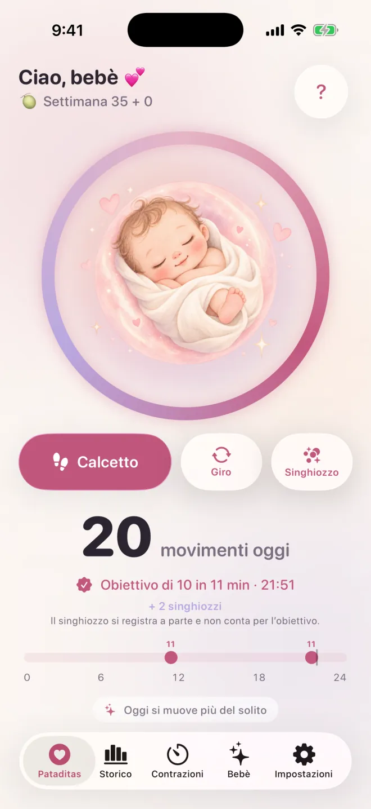

Pataditas / Come usare Pataditas
Come contare i calcetti del bebè con iPhone o Apple Watch
Pataditas è un diario privato della gravidanza per iPhone e Apple Watch. Tu registri i movimenti che senti; l’app salva l’orario e il tipo di movimento. Questa guida spiega come funziona davvero l’app; non è una prescrizione medica su come contare.
Registra un movimento in quattro passaggi
Apri la schermata dei movimenti
Completa o salta la personalizzazione facoltativa. Se compare l’offerta Plus, chiudila per continuare a contare gratis.
Registra con un tocco
Tocca Calcetto, Giro o Singhiozzi. Ogni pulsante salva subito il proprio tipo di movimento. Il singhiozzo resta nel diario ma non conta per un gruppo di movimenti.
Usa la grande illustrazione per i calcetti
Un tocco sull’illustrazione centrale registra un calcetto. Non c’è nessuna modalità di movimento da selezionare e nessun timer da avviare.
Correggi un tocco accidentale
Tocca subito l’opzione temporanea Annulla dopo la registrazione, se hai registrato qualcosa per errore.

Registra dal tuo Apple Watch
Pataditas include un’app complementare per Apple Watch (watchOS 26 o successivo). Tocca lo schermo dell’orologio ogni volta che senti un movimento e aggiungi Pataditas al quadrante o alla Raccolta smart per accedere in un attimo. Le registrazioni si sincronizzano con l’app per iPhone tramite il tuo iCloud privato.
Cosa mostrano lo storico e i grafici
Lo storico gratuito mostra gli ultimi sette giorni. Plus aggiunge lo storico completo della gravidanza, i grafici degli andamenti e un resoconto PDF. I confronti usano solo i movimenti che hai inserito; le registrazioni mancanti possono modificarli.
Cosa significa il festeggiamento dei 10 movimenti
Pataditas raggruppa 10 calcetti o giri registrati entro due ore. Non è una valutazione della salute né un obiettivo giornaliero valido per tutti. Segui le indicazioni della tua équipe sanitaria.
Le indicazioni sul conteggio dei movimenti del bebè non coincidono
Le indicazioni sul conteggio non coincidono. Count the Kicks (USA) suggerisce di cronometrare quanto tempo serve per sentire 10 movimenti, a partire dalla 28ª settimana (la 26ª se hai un rischio più alto o aspetti più di un bebè). L’NHS (Regno Unito) dice che non c’è un numero stabilito di movimenti e che non è necessario contare i calcetti, ma che dovresti imparare a conoscere il ritmo abituale del tuo bebè. Entrambi concordano sul punto fondamentale: se il bebè si muove meno del solito, smette di muoversi o il ritmo cambia, contatta subito l’ostetrica, il medico o il reparto di maternità. L’NHS aggiunge che dovresti chiamare anche in piena notte e non aspettare il giorno dopo. Pataditas registra solo ciò che senti; chiedi alla tua équipe sanitaria quale approccio consiglia.
Approfondisci: contare i calcetti del bebè, quando iniziare, cosa è normale, quando chiamare →
I tuoi dati restano privati
Registrare i movimenti funziona anche senza connessione. Con iCloud attivo, le registrazioni si sincronizzano tramite il tuo account iCloud privato. Non serve alcun account Pataditas e lo sviluppatore non può leggere il tuo diario della gravidanza.
Autore, fonti e ambito
Scritto da Luis Angel Lucatero Villanueva, fondatore di Kaelux, che sviluppa Pataditas. Questa guida contiene informazioni generali sul prodotto, non consigli medici. Non è stata rivista da un professionista sanitario; le affermazioni mediche provengono dalle fonti elencate qui sotto (in inglese) e sono state verificate l’ultima volta il 21 ottobre 2026. Hai notato un errore? Scrivi a hola@rutmia.com.